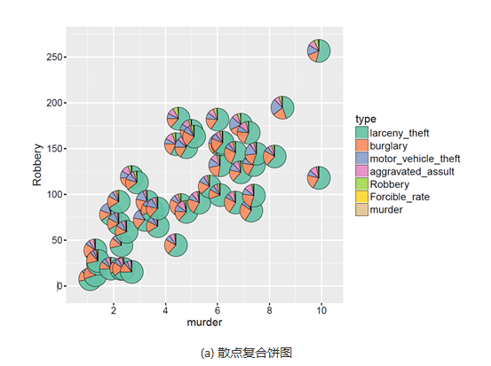
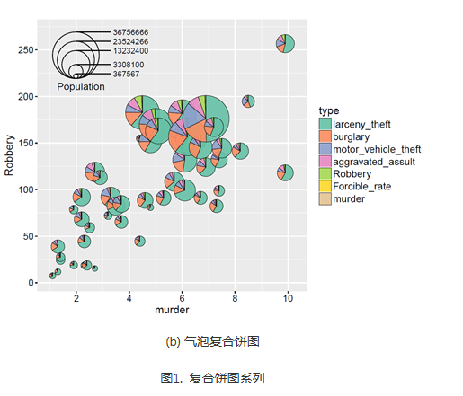
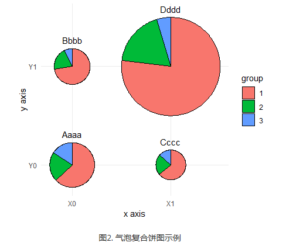

复合图形可以给出更多的信息，并且更能够观察数据之间的联系。一般所说的复合饼图包括以下两种：
散点复合饼图（compound scatter and pie chart）可以展示三个数据变量的信息：(x, y, P)，其中x和y决定气泡在直角坐标系中的位置，P表示饼图的数据信息，决定饼图中各个类别的占比情况，如图1(a)所示。
气泡复合饼图（compound bubble and pie chart）可以展示四个数据变量的信息：(x, y, z, P)，其中x和y决定气泡在直角坐标系中的位置，z决定气泡的大小，P表示饼图的数据信息，决定饼图中各个类别的占比情况，如图1(b)所示。


具体操作如下：
library(ggforce)
library(dplyr)
data_graph <- read.table(text = "x y group nb
1 0 0 1 1060
2 0 0 2 361
3 0 0 3 267
4 0 1 1 788
5 0 1 2 215
6 0 1 3 80
7 1 0 1 485
8 1 0 2 168
9 1 0 3 101
10 1 1 1 6306
11 1 1 2 1501
12 1 1 3 379", header = TRUE)
# make group a factor
data_graph$group <- factor(data_graph$group)
# add case variable that separates the four pies
data_graph <- cbind(data_graph, case = rep(c("Aaaa", "Bbbb", "Cccc", "Dddd"), each = 3))
# calculate the start and end angles for each pie
data_graph <- left_join(data_graph,
data_graph %>%
group_by(case) %>%
summarize(nb_total = sum(nb))) %>%
group_by(case) %>%
mutate(nb_frac = 2*pi*cumsum(nb)/nb_total,
start = lag(nb_frac, default = 0))
# position of the labels
data_labels <- data_graph %>%
group_by(case) %>%
summarize(x = x[1], y = y[1], nb_total = nb_total[1])
# overall scaling for pie size
scale = .5/sqrt(max(data_graph$nb_total))
# draw the pies
ggplot(data_graph) +
geom_arc_bar(aes(x0 = x, y0 = y, r0 = 0, r = sqrt(nb_total)*scale,
start = start, end = nb_frac, fill = group)) +
geom_text(data = data_labels,
aes(label = case, x = x, y = y + scale*sqrt(nb_total) + .05),
size =11/.pt, vjust = 0) +
coord_fixed() +
scale_x_continuous(breaks = c(0, 1), labels = c("X0", "X1"), name = "x axis") +
scale_y_continuous(breaks = c(0, 1), labels = c("Y0", "Y1"), name = "y axis") +
theme_minimal() +
theme(panel.grid.minor = element_blank())
最终得到的图形如下所示：
